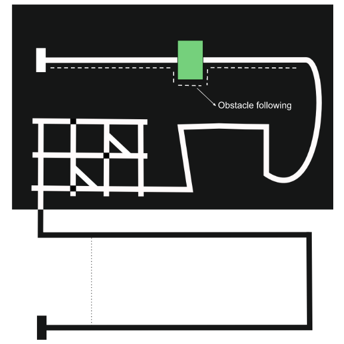

CS684: Embedded System Course
Lab 3: Lustre/Heptagon implementation of Valet Parking
Aim:
In this lab, the robot should reach to destination by using Line Following and Obstacle following algorithm if any static obstacle has been detected by the robot along the path. Hence an algorithm has to be developed for Line Following and Obstacle following in Heptagon.

a. Line following: The arena provided to you is made up of curved and straight paths for the robot. To traverse the arena, the robot has to do line following depending on its position. Hence an algorithm has to be developed for Line following in Heptagon.
b. Obstacle following: While robot is following white line path, any static obstacle can be present on the white line (straight path) of the arena. If the robot detects an obstacle along the path, then it has to cross the obstacle using obstacle following algorithm and come back to the white line as shown in the image above. The rest of the traversal will continue without obstacles. The algorithm for obstacle following should be developed in Heptagon.
Algorithm
- Use PID controller for Line following.
- White Line following has to be done using the white line sensors provided. 5 sensors will be provided and the team can decide the position of the sensors.
- Each sensor value ranges between: 0 to 1023.
- For example, if you have chosen the threshold value for the sensor as 400, if a sensor value is less than 400 then that particular sensor is not on the black line and if the value of the particular sensor is greater than threshold then that sensor is on the black surface.
- So depending upon the value of the particular sensor, robot has to decide whether it is on the white line or it is deviated from the white line.
- To adjust the position of the robot if it deviated from the white line use PID. The same cases as given in Lab 1 (FSM) applies here as well but rather than binary values, now you have to consider values between 0 to 1023.
- Likewise, team has to assume different scenarios or test cases which may come across while robot is traversing the arena.
- While robot is following white line and obstacle is detected along the path, then robot has to switch to obstacle following algorithm till it finds the white line. Once it comes on the white line, it should switch to Line following algorithm as shown in the image above.
- So, inputs should be data of 5 white line sensors and IR proximity sensors.
- Obstacles can be of any shape and size. It can extend outside the line.
- For Line following, 5 white line sensors will be provided and for Obstacle following 5 IR proximity sensors will be provided. Team has to mandatory use 5 white line sensors but team can decide number and position of IR sensors to be used.
- The values IR sensors proximity vary between 0 and 1023.
- You are free to make assumptions regarding readings of both sensors at different instances. For Line following, we have discussed some assumptions scenarios above. For obstacle following, if the value of the front IR sensor is less than the left and right IR sensor then the obstacle is at the front and then robot has to decide from which direction it should follow the obstacle till it comes back to the white line.
Input & Output format:
- 5 inputs of white line sensors and "n" inputs of IR proximity sensors are required.
Note: "n" is the number of IR proximity sensors teams are using, team can decide number and position of IR sensors to be used.
- From the final node, 3 outputs are required: 2 velocity values (of left and right motors) and direction.
- Directions list:
| Direction | Representation |
|---|---|
| Stop | 0 |
| Forward | 1 |
| Left | 2 |
| Right | 3 |
| Backward | 4 |
- Velocities can range between 0 and 100